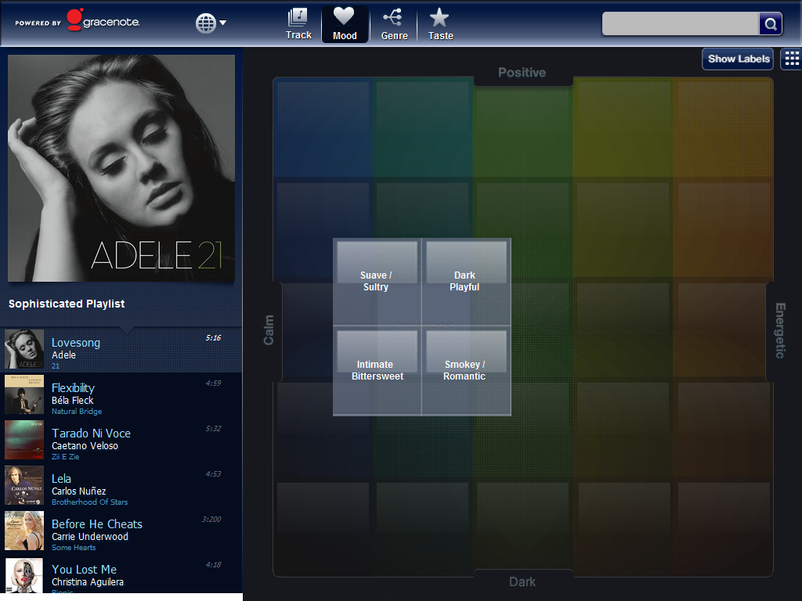

The MoodGrid library allows applications to generate playlists and user interfaces based on Gracenote MoodTrack-level perceptual descriptor of a piece of music, using emotional terminology that a typical listener might use to describe the audio track; includes hierarchical categories of increasing granularity. See Sonic Attributes. descriptors. MoodGrid provides Mood descriptors to the application in a two-dimensional grid that represents varying degrees of moods across each axis. One axis represents energy (calm to energetic) and the other axis represents valence (dark to positive). When the user selects a mood from the grid, the application provides a playlist of music that corresponds to the selected mood. Additional filtering support is provided for genre, origin, and era music attributes.
Mood Descriptors are delivered with track metadata from queries to MusicID, MusicID-File, or MusicID-Stream services.
The MoodGrid data representation is a 5x5 or 10x10 grid. Each element of the grid corresponds to a Gracenote Mood category ID (Level 1 for 5x5 and Level 2 for 10x10), which can be used to create a list of playable songs in the user’s collection characterized by that mood. Each Level 1 Mood maps to four, more granular, Level 2 Moods. For example, a Level 1 Mood might be “Romantic”, and the corresponding Level 2 Moods might be “Suave/Sultry”, “Dark/Playful”, “Intimate/Bittersweet”, and “Smokey/Romantic”, providing a greater level of detail within the “Romantic” Mood.

Note: The pictured implementation of MoodGrid is centered upon the collection and arrangement of track Mood descriptors across the dimensions of energy (calm to energetic) and valence (dark to positive). The actual layout and navigation of these moods is entirely dependent upon the implementation of the application’s user interface. Gracenote’s MoodGrid does not necessarily need to be presented in the square representation demonstrated above.